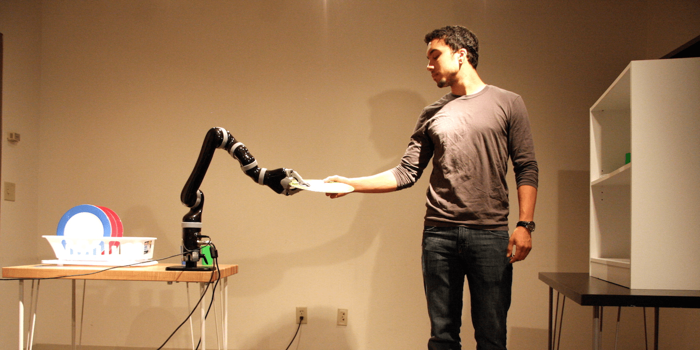

Research
Our research mission is to innovate intuitive, interactive technologies that assist and augment people. Towards this goal, we draw on human-computer interaction (HCI), robotics, and artificial intelligence (AI) and contextualize our research in domains such as healthcare, education, and manufacturing.
Human-Robot Teaming
 To enable seamless human-robot teamwork in which participating parties leverage their respective strengths to achieve common goals, we aim to understand how humans work together as a team and develop interactive robot systems that can work cooperatively with people. In particular, we have explored (1) how to decipher human behavioral cues (e.g., eye gaze) for effective robot support and (2) how to synthesize intuitive robot behaviors to facilitate interactions with humans.
Selected Publications
Gao, Y., Huang, C.-M. (2019). PATI: A Projection-based Augmented Table-Top Interface for Robot Programming. In Proceedings of the 2019 ACM International Conference on Intelligent User Interface (IUI’19).
[link] [project page] |
Huang, C.-M. and Mutlu, B. (2016). Anticipatory Robot Control for Efficient Human-Robot Collaboration. In Proceedings of the 2016 ACM/IEEE International Conference on Human-Robot Interaction (HRI’16).
[link] |
Huang, C.-M., Cakmak, M., and Mutlu, B. (2015). Adaptive Coordination Strategies for Human-Robot Handovers. In Proceedings of the 2015 Robotics: Science and Systems Conference (RSS’15).
[link] |